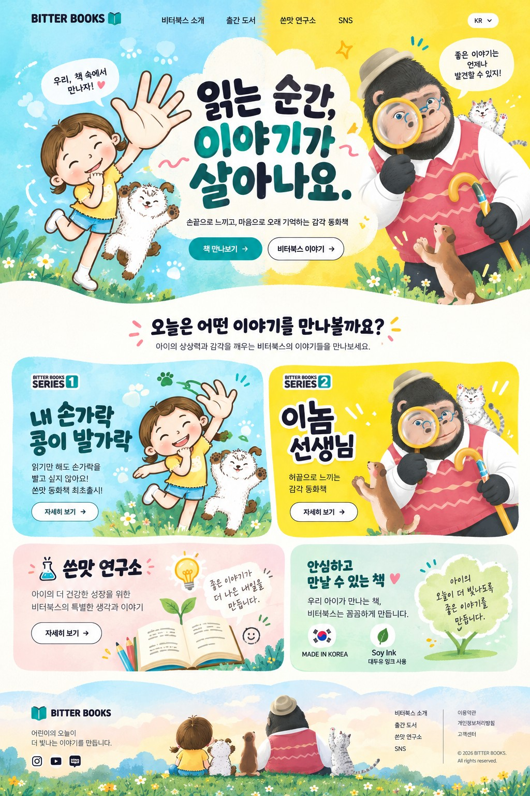
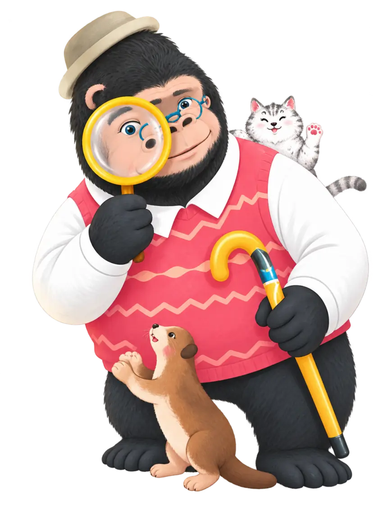
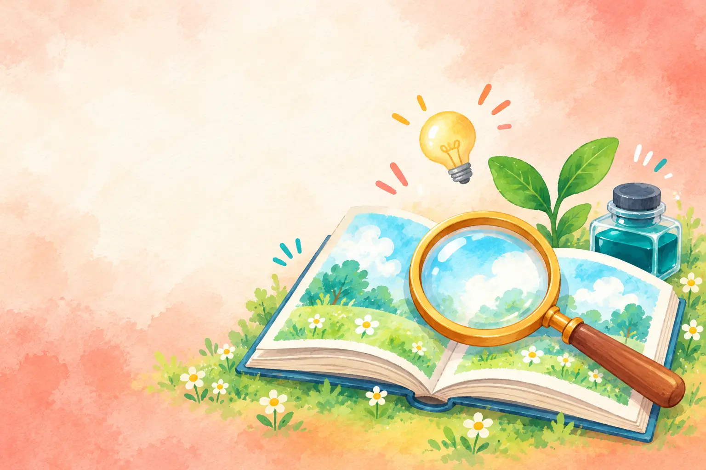
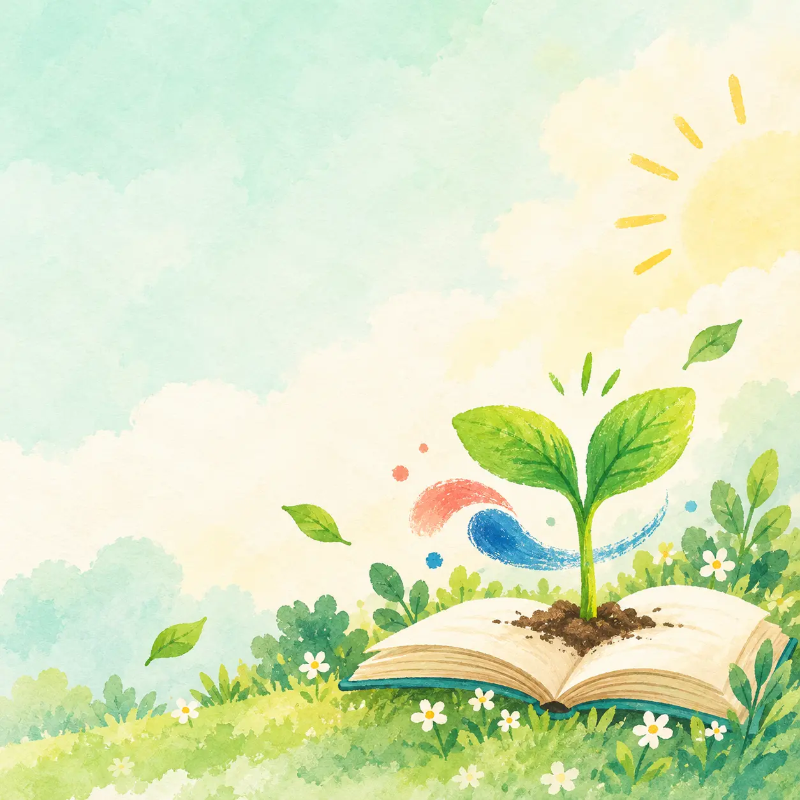

우리, 책 속에서
만나자!
읽는 순간, 이야기가 살아나요.

손끝으로 느끼고, 마음으로 오래 기억하는 감각 동화책
어떤 이야기인지
함께 들여다볼까?

오늘은 어떤 이야기를 만나볼까요?
아이의 상상력과 감각을 깨우는 비터북스의 이야기들을 만나보세요.
BITTER BOOKS
SERIES 1
내 손가락
콩이 발가락
읽기만 해도 손가락을
빨고 싶지 않아요!
쓴맛 동화책 최초 출시!
BITTER BOOKS
SERIES 2
이놈
선생님
혀끝으로 느끼는
감각 동화책
쓴맛 연구소
아이의 더 건강한 성장을 위한
비터북스의 특별한 생각과 이야기

안심하고
만날 수 있는 책
우리 아이가 만나는 책,
비터북스는 꼼꼼하게 만듭니다.
MADE IN KOREASoy Ink

ABOUT BITTER BOOKS
배움은 오감에서 시작됩니다.
혼내고 억지로 막기보다, 아이가 스스로 느끼고 알아가도록.
비터북스는 이야기와 쓴맛 인쇄 기술 BitterINK를 연결하는 출판 브랜드입니다.
01 / FEEL감각으로 만나는 이야기
눈으로 읽고, 손끝으로 만나고, 특별한 쓴맛 체험으로 이야기 속 메시지를 느낍니다.
02 / THINK마음에 오래 남는 경험
아이의 행동 뒤에 있는 마음을 먼저 들여다봅니다. 보호자와 함께 읽고 대화하며 스스로 생각할 시간을 전합니다.
03 / GROW작은 변화를 응원하는 책
정답을 강요하기보다 새로운 행동을 시작할 작은 계기를 만듭니다. 어린이의 오늘이 더 빛나는 이야기를 만들어갑니다.
WATCH & PLAY
책 밖에서도, 이야기는 계속돼요!
아이와 함께 볼 영상부터 짧고 재미있는 릴스까지 만나보세요.
WATCH & PLAY
책 밖에서도, 이야기는 계속돼요!
아이와 함께 볼 영상부터 짧고 재미있는 릴스까지 만나보세요.
움직이는 이야기, 함께 볼까요?
비터북스 친구들을 영상으로 만나보세요.
유튜브 영상 보러 가기 ↗잠깐의 즐거움, 릴스 한 편!
책 속 장면과 비터북스의 소식을 짧게 즐겨요.
인스타그램 릴스 보러 가기 ↗